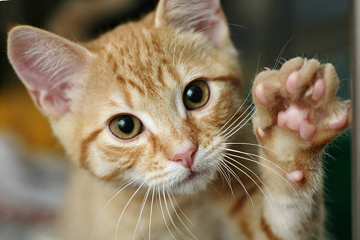
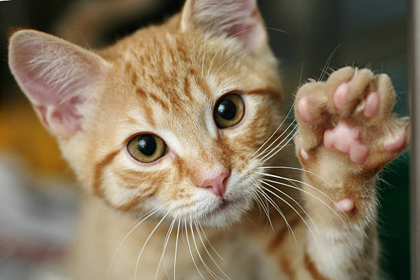

Welcome to Cat Lover's Paradise!
Here, you'll find everything about our feline friends. From adorable pictures to interesting facts, we've got it all!
Meet Our Furry Friends
Check out these cute cat pictures:
 

Interesting Cat Facts
- Cats have five toes on their front paws but only four on their back paws.
- The world's oldest known pet cat was found on the Mediterranean island of Cyprus.
- Cats sleep for an average of 12-16 hours a day.
- Cats have a unique fingerprint, just like humans.
Hope you enjoyed your time in Cat Lover's Paradise!